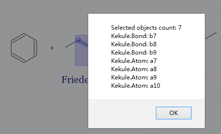

Composer Widget
In the toolkit, composer is the dominate widget to input chemical structures.
Composer UI
< Composer UI, with object inspector opened >
The primary part of composer is a input panel, in which user can draw chemical structures and other objects. Around it there exist four toolbars as shown in figure above. The common toolbar provides general purpose functions such as load/save, undo/redo and copy/paste:
Button |
Name |
Description |
|---|---|---|
|
newDoc |
Create a new blank document to edit. |
|
loadData |
Load external data file to composer. |
|
saveData |
Save object inside composer to file. |
|
undo |
Undo previous operation. |
|
redo |
Redo last operation. |
|
copy |
Copy selection to internal clipboard. 1 |
|
cut |
Cut selection to internal clipboard. 1 |
|
paste |
Paste from clipboard. 1 |
|
config |
Change the configurations of composer. |
|
objInspector |
Open or hide object inspector panel. |


The zoom toolbar simply contains zoom in/out and reset buttons:
Button |
Name |
Description |
|---|---|---|
|
zoomIn |
Zoom in objects in composer. |
|
zoomOut |
Zoom out objects in composer. |
|
reset |
Reset zoom level to 1. |


The chem toolbar enables user to input, remove or select different types of chemistry objects. The operating practices of inputting molecule are quite similar to existing chemistry editors like ChemDraw and JME. When click on a button in the chem toolbar, an associated toolbar with more options may be displayed at the bottom or the left side of the editor.
Button |
Name |
Description |
|---|---|---|
|
manipulate |
Select objects in composer. |
|
erase |
Remove selection in composer. |
|
bond |
Input different types of molecule bond. |
atomAndFormula |
Input atom symbol or formula. |
|
|
ring |
Input typical ring structures with 3-9 atoms. |
|
charge |
Input negative or positive charge on atom. |
glyph |
Input glyphs and symbols such as reaction arrow and heat symbol. |
|
|
textImage |
Input text or image block. |


The style toolbar consists of two drop box to select font name and size of text, three drop button to change text direction and horizontal/vertical alignment and a drop button to change change color of objects.
The object modifier toolbar is visible when objects in the editor are selected. With dropdown buttons on it, user can change the properties of selected objects with ease. Different modifier buttons are displayed when different types of objects are in selection.
All those toolbars are configurable and we will discuss it later.
A special object inspector can be opened by click on objInspector button in common toolbar. It provides a structural view of all objects in editor and enables user change all properties of selected objects. The concept of object inspector is borrowed from some programming environments and not familiar with chemists, but it is real helpful to control some unusual aspect of atoms, bonds and other objects.
Creating Composer
For developers, creating a composer is as simple as other widgets in the toolkit:
var composer = new Kekule.Editor.Composer(document);
composer.setDimension('600px', '400px');
composer.appendToElem(document.getElementById('parent')).setChemObj(molecule);
// or create on existing element
var composer = new Kekule.Editor.Composer(document.getElementById('div1'));
In HTML binding way:2
<div id="composer" style="width:600px;height:400px" data-widget="Kekule.Editor.Composer" data-chem-obj="url(#molecule)"></div>
Note the chemObj property is set by data-chem-obj attribute in the HTML code above,
thus molecule from that resource
("url(#molecule)") will be loaded automatically into the composer.
Loading and Retrieving Molecules in Composer
Similar to chem viewer, you can load object in composer by chemObj property.
The following code will load a molecule into composer:2
composer.setChemObj(molecule);
However, after loading the molecule, if checking the object inspector, you may find
that the root object in composer is not molecule, but a ChemDocument, with molecule
as its child. This is because composer supports editing multiple molecules (and other types
of objects) in one document (like ChemDraw), so a extra root ChemDocument instance
need to be created automatically to hold all those molecules. So the chemObj property
getter will always returns this root chem document.

< The structure of object tree in composer after loading a molecule >
< The structure of object tree in composer with multiple molecules and objects >
If you want to retrieve a certain type of child objects in document, method exportObjs
can be used:2
// Get all molecules inside editor
var mols = getComposer().exportObjs(Kekule.Molecule);
// dump information
var msg = 'Molecule count: ' + mols.length + '\n';
for (var i = 0, l = mols.length; i < l; ++i)
{
var mol = mols[i];
msg += '--------------------\n' + Kekule.IO.saveFormatData(mol, 'cml') + '\n';
}
console.log(msg);
The following codes get the first molecule in composer, then display it in a chem viewer widget:2
// Get all molecules inside editor
var molecule = composer.exportObjs(Kekule.Molecule)[0];
// Display in viewer
if (molecule)
Kekule.Widget.getWidgetById('viewer').setChemObj(molecule);
Of course, the viewer is also able to display the whole chem document:
var chemDoc = composer.getChemObj();
Kekule.Widget.getWidgetById('viewer').setChemObj(chemDoc);
Get Selected Objects
User often selects parts of molecule in composer. The selection information
can be get by selection property of composer:2
var selObjs = composer.getSelection();
// dump information
var msg = 'Selected objects count: ' + selObjs.length;
for (var i = 0, l = selObjs.length; i < l; ++i)
{
msg += '\n' + selObjs[i].getClassName() + ': ' + (selObjs[i].getId() || '');
}
alert(msg);
The codes above usually will prints all selected atoms and bonds in a molecule.
Operation History
In the composer, user may modify molecules and other types of objects. All modifications are recorded by default. So unlimited undo/redo action is possible:2
composer.undo(); // undo last modification
composer.redo(); // redo last modification
If the operation history is not necessary, you can disable it too:
composer.setEnableOperHistory(false);
Limiting the Functions of Composer
Sometimes, you may want to limit the ability of a composer, for example, disable creating new document or disable loading objects:2
composer.setEnableCreateNewDoc(false);
composer.setEnableLoadNewFile(false);
Such limitations forces user to focus on currently objects in composer.
Another limitation is disable creating new child object in composer. It is quite useful to force user to only edit one molecule at once:2
composer.setAllowCreateNewChild(false);
Customize UI of Composer
All toolbars in composers can be easily customized like chem viewer:2
// Set displayed buttons in common and zoom toolbar
composer.setCommonToolButtons(['newDoc', 'loadData', 'saveData', 'zoomIn', 'zoomOut']);
// Set displayed buttons in chem toolbar
composer.setChemToolButtons(['manipulate', 'erase', 'bond', 'atomAndFormula', 'ring', 'charge']);
// Set available object modifiers categories
composer.setAllowedObjModifierCategories([
Kekule.Editor.ObjModifier.Category.GENERAL, Kekule.Editor.ObjModifier.Category.CHEM_STRUCTURE
/* Kekule.Editor.ObjModifier.Category.STYLE, Kekule.Editor.ObjModifier.Category.GLYPH */
]);
// Set displayed components in style toolbar composer.setStyleToolComponentNames([‘color’, ‘textDirection’, ‘textAlign’]); // hide style toolbar totally composer.setEnableStyleToolbar(false);
An interactive demo has also been published to let the user customize composer widget with ease.
Presets
Some typical presets of composer are also provided as a shortcut of setting varies of properties.
Change to a preset by method setPredefinedSetting:2
// change to preset fullFunc
composer.setPredefinedSetting('fullFunc');
- ‘fullFunc’
Composer with full functions, toolbar with all buttons. Equals to:
composer
.setEnableOperHistory(true)
.setEnableLoadNewFile(true)
.setEnableCreateNewDoc(true)
.setAllowCreateNewChild(true)
.setCommonToolButtons(['newDoc', 'loadData', 'saveData', 'undo', 'redo', 'copy', 'cut', 'paste',
'zoomIn', 'reset', 'zoomOut', 'config', 'objInspector']) // create all default common tool buttons
.setChemToolButtons(['manipulate', 'erase', 'bond', 'atom', 'formula',
'ring', 'charge', 'glyph', 'textAndImage']) // create all default chem tool buttons
.setStyleToolComponentNames(['fontName', 'fontSize', 'color',
'textDirection', 'textAlign']); // create all default style components
- ‘molOnly’
Displays only buttons related with molecule. Useful for restricting user input to molecule.
composer
.setEnableOperHistory(true)
.setEnableLoadNewFile(true)
.setEnableCreateNewDoc(true)
.setAllowCreateNewChild(true)
.setCommonToolButtons(['newDoc', 'loadData', 'saveData', 'undo', 'redo', 'copy', 'cut', 'paste',
'zoomIn', 'reset', 'zoomOut', 'config', 'objInspector']) // create all default common tool buttons
.setChemToolButtons(['manipulate', 'erase', 'bond', 'atomAndFormula',
'ring', 'charge']) // create only chem tool buttons related to molecule
.setStyleToolComponentNames(['fontName', 'fontSize', 'color',
'textDirection', 'textAlign']); // create all default style components
- ‘compact’
Toolbar with most essential buttons. Equals to:
composer
.setCommonToolButtons(['newDoc', 'loadData', 'saveData', 'undo', 'redo']) // create a small number of tool buttons
.setChemToolButtons(['manipulate', 'erase', 'bond', 'atomAndFormula',
'ring', 'charge', 'glyph', 'textAndImage']); // create all default chem tool buttons
More Configurations
Clicking on Change Settings button in the common toolbar, you may find that there are many other
configurable properties which affect many other aspects of composer, like interaction style, molecule
render style, text font style and color style. Those settings are all encapsulated in renderConfigs
and editorConfigs properties of composer. As those two properties are quite complex, they will not
be explained further in this tutorial. You may check the API document for their details.